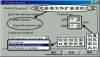

|
|
| 当前位置：电脑报电子版 > 1999 年 > 40 期 > 软件世界 > 轻松看图小工具——Picaview32 |
| 《 轻松看图小工具——Picaview32 》 |
| 时下，ACDSee几乎成了电脑爱好者必备的看图工具，其强大功能自不必说，今天这里向大家介绍的是ACD公司的另一款看图软件杰作：PicaView32。PicaView把图象浏览窗口加于Windows右键菜单之中，只须单击鼠标右键，图像即随弹出的菜单打开，它还能成批地打印图像和成批地转换图像格式，对JPEG图像可无损耗地进行旋转，支持打开的图像格式多达十四种。
右键看图 PicaView安装好后，在一幅图像文件上单击鼠标右键，如图1，该幅图像即在右键菜单中显示出来。图像下边是如图1，的主菜单，列有该幅图像的基本信息如像素、色度数、格式等。与ACDSee一样，PicaView采用了高效、快速的图像解码算法，因此和Windows窗口中的预览功能相比，具有速度快、显示图像逼真、支持的图像格式多、浏览窗口大小可以任意调节等优点。需注意的是，安装好PicaView后，进入其所在的目录，将看不到任何可执行的EXE文件，同时在开始菜单中也只有PicaView Help项。这是因为它被集成在Windows Explorer中，当进入Win95/98，随着资源管理器Explorer的启动，PicaView即处于待命状态，当右击某个文件时，PicaView首先检查该文件是否是可识别的图像文件，如果是，就自动把打开的图像加在弹出的快捷菜单中；如果不是，则快捷菜单跟往常没有任何区别。其他功能 在右键菜单下各功能子菜单中（如图1），还可对图像进行查看、打印、复制、格式转换、旋转（仅对JPEG图像）、设成壁纸等操作。单击子菜单的“View”项或者在浏览窗口点鼠标左（右）键则进入PicaView的图像查看窗口，可对整幅图像进行复制、打印、设壁纸、缩放等操作（通过右击弹出菜单后选取相应命令完成）。 主菜单“View”下面三项是批处理图像时的设置，只有当一次选中多幅图像时他们才出现，其设置很简单，这里不再赘述。 相关设置 PicaView32的设置是在“Options”项中进行的，在“Options”窗口中有两个标签。在“General”标签中（图2），设定浏览窗口显示位置栏有三个选项，依次是无显示窗口、显示在主菜单上、显示在子菜单上；浏览窗口的大小则可以根据自己的喜好设置，系统的默认值是150×100，如果窗口设置得大一些，则右键看图效果更好。在Display标签中，各项设置与ACDSee大同小异，笔者只是觉得其中的伽马修正非常有用，本来伽马修正是针对显示器非线性失真的调节，取值大小01～3，默认值为12，取值越小显示的图像越暗，反之则越亮，当值为1时表示没有修正。如果图像或电脑的显示器有偏亮或偏暗的缺陷，则伽马修正的好处便显现出来了。 PicaView32赋予了鼠标右键在看图方面的便利功能，与ACDSee相比，有自己的独特之处，他们在功能上有一定的互补性。如果您的计算机同时安装了这两个软件，将使您在欣赏图像时更加轻松、自如。笔者试用的是它的V1．3版，该软件下载地址：http:∥wwwacdsystemscom；http:∥wwwacdsyscom；http:∥wwwacdvictoriacom。 (重庆 孔宇) |
| 下载本期推荐软件 | 页 首 |
| 《电脑报》版权所有，电脑报网站编辑部设计制作发布 |